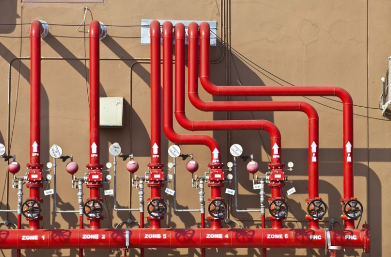
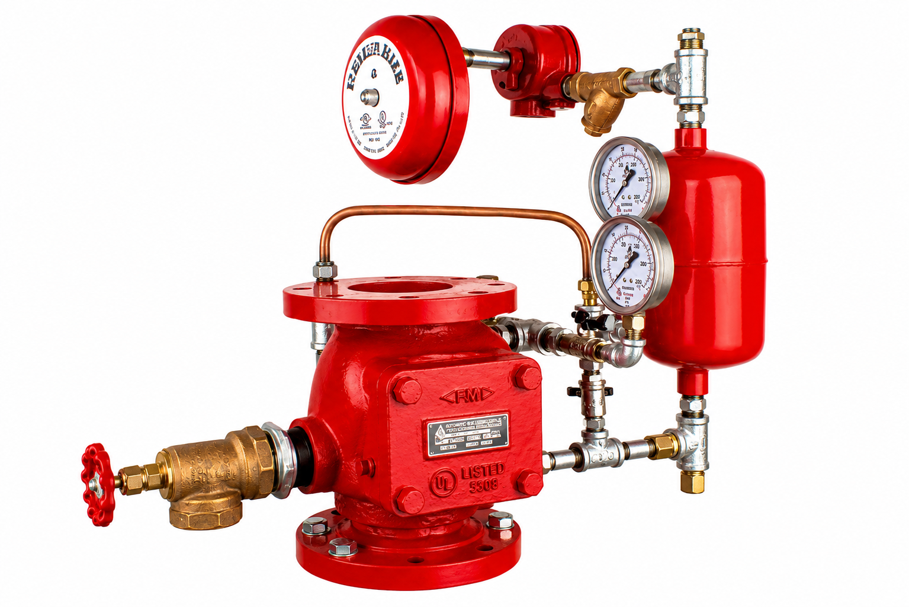
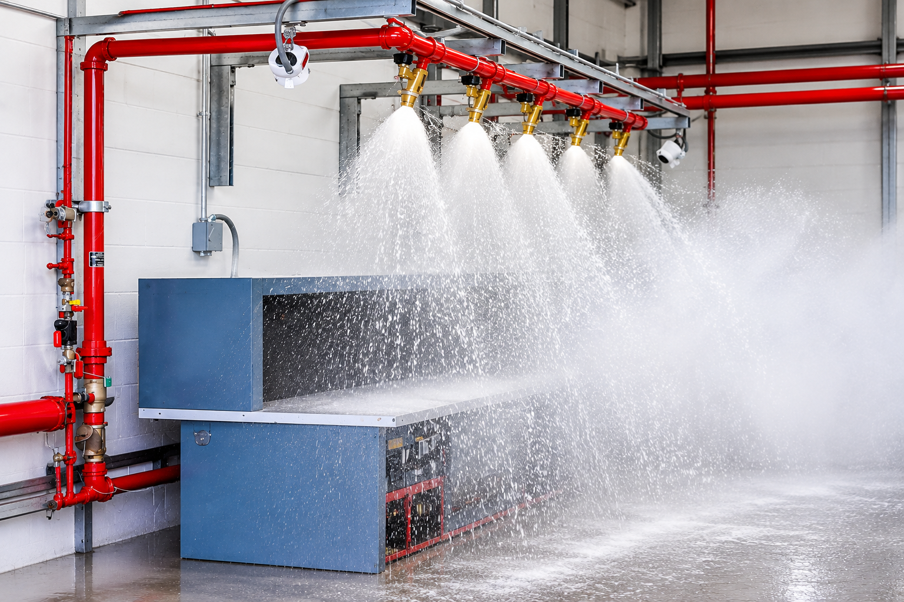
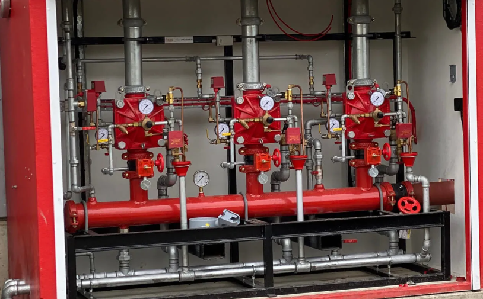
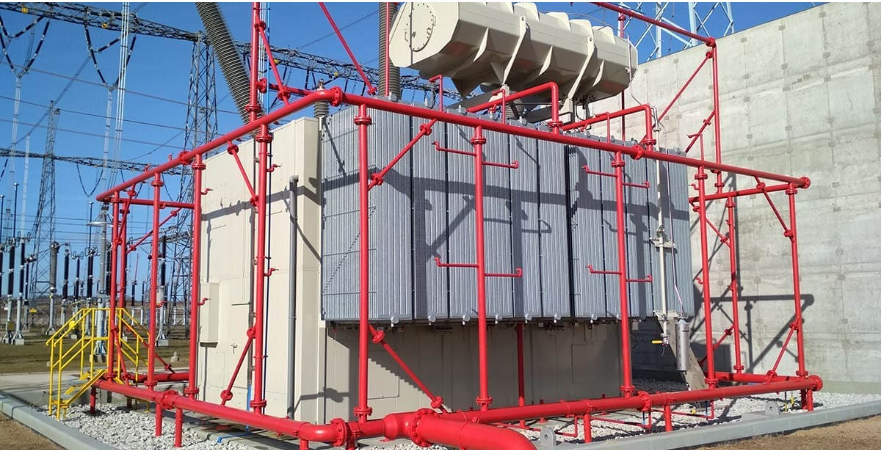
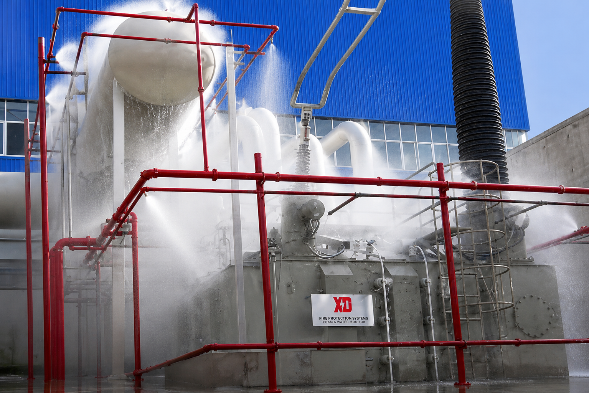
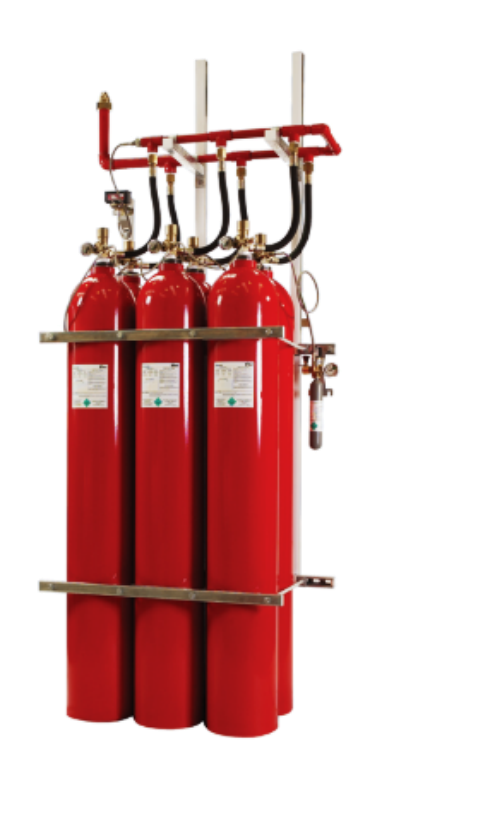
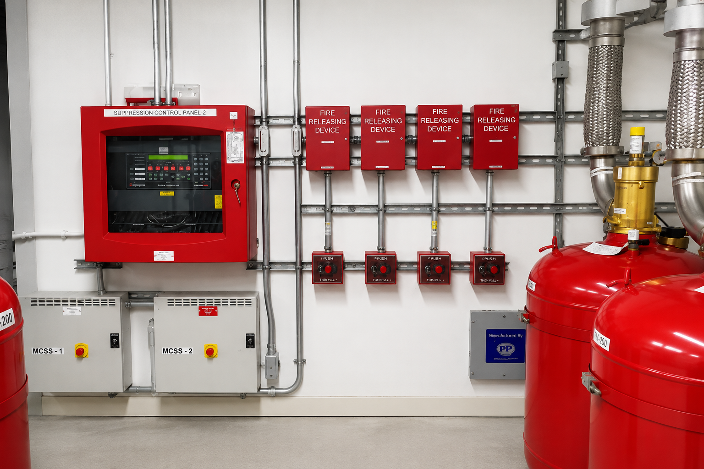
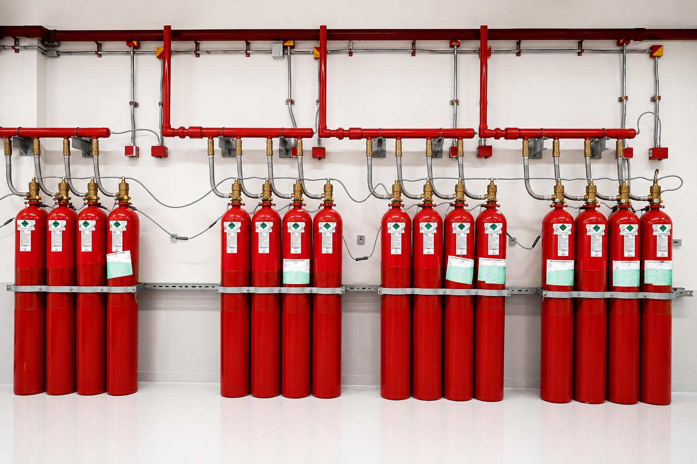

Water Based Protections
Sprinkler Systems

Automatic sprinkler systems operate on the principle of selective activation, making them highly effective and efficient in fire suppression. In the event of a fire, only the sprinkler heads exposed to the heat generated by the fire are activated, delivering water directly to the affected area while all other sprinklers remain closed. This localized response ensures rapid fire control, minimizes water damage, and optimizes water usage. Sprinkler systems provide dependable fire protection for commercial buildings, industrial facilities, and other high-risk occupancies. For specialized fire hazards, a film-forming foam concentrate can be introduced into the water supply to enhance fire suppression performance, particularly for flammable liquid fires.
A sprinkler system comprises a network of piping fitted with sprinkler heads that protect designated areas throughout a building. Under normal operating conditions, each sprinkler head is sealed by a heat-sensitive, liquid-filled glass bulb. During a fire, when the surrounding temperature reaches the sprinkler's rated activation point, the liquid inside the bulb expands, causing the glass bulb to rupture and the sprinkler to open. Water is then discharged onto a deflector, which distributes it uniformly over the affected area to effectively suppress or extinguish the fire. In most cases, only the sprinkler heads closest to the fire are activated, enabling rapid fire control while minimizing water damage. Simultaneously, the system initiates an alarm to notify both the on-site emergency response team and the local fire department, ensuring a prompt and coordinated firefighting response.

The advantage
Simply effective
- Sprinkler systems combine fire alarms and extinguishing in one system.
- Early detection enables safe evacuation and minimizes damage to property.
- Water is directed to the exact location of the fire.
- Sprinklers outside of the affected area remain closed.
- The effective use of extinguishing water at the onset of the fire prevents the development and spread of smoke and harmful substances.
- Sprinkler systems enable structural and architectural flexibility and are a low-cost alternative to additional fire barriers.
- Financial damage and business interruptions are significantly reduced with the use of sprinkler systems.
- By minimizing the fire, sprinkler systems significantly support the work of the fire department.
Applications
Facilities which can be protected using sprinkler system:

Water Spray Systems
Deluge Systems
Facilities handling highly flammable materials present an elevated fire risk, as these substances can accelerate fire growth and spread rapidly. In such high-hazard environments, conventional sprinkler systems may not respond quickly enough to provide effective fire protection. To address these risks, water spray systems are employed. These systems integrate automatic fire detection with targeted water discharge, enabling rapid activation and efficient fire suppression to limit fire spread and minimize damage. Deluge systems are triggered hydraulically, pneumatically or electrically and disperse water throughout the entire protection zone with open nozzles. In this way they reliably fight fires in rooms and facilities, even if a particularly fast spreading of the fire is to be expected. If necessary, a film-forming foam agent can be added to the extinguishing water.
Operational Readiness
Deluge System Advantages & Piping Network
- Extinguishes fires quickly and prevents fires from spreading over a large area.
- Minimizes the damage caused by fire and reduces downtimes, protects the future of your business.
- High flexibility in design and implementation.
- Reduces fumes and binds contaminants.
- Allows large open areas and thus a more flexible use of the premises.
- Uses water, a natural fire extinguishing agent that is available in required quantities at a very low price.
- After a fire, the water spray system is quickly restored to ready mode.
All designated areas requiring fire protection are covered by a network of piping fitted with open discharge nozzles, which are organized into multiple extinguishing zones. Under normal standby conditions, the piping system up to the deluge valve remains charged with water and is maintained in a state of operational readiness for immediate activation.


Asset Protection
Critical Infrastructure & Asset Protection
Our water spray systems are designed to protect both enclosed spaces and critical assets and are suitable for installation in both indoor and outdoor environments. They provide an effective solution for applications requiring rapid fire suppression and preventive cooling of equipment or structures exposed to fire hazards. By combining extensive engineering expertise, compliance with applicable codes and standards, the use of certified and approved components, and installation by qualified professionals, our water spray systems deliver reliable, high-performance fire protection and ensure the highest level of safety.
Applications
Preventive Cooling & High-Hazard Facilities
Water spray systems are used to protect rooms and objects and are suitable for indoor and outdoor installation. Water spray systems are the preferred solution for the protection of objects requiring preventive cooling or quick-fire suppression, such as:
- Power plants and waste-to-energy (WTE) power plants
- Oil refineries and fuel tanks
- Transformers
- Facades
- Cable channels
- Recycling plants
- Waste incineration plants
- Paint shops
- Theatres
- Mining
- Airports
- Conveyor belts, loading and unloading stations


Residue-Free Protection
Clean Agent Systems
Clean Agent Fire Extinguishing Systems provide rapid, reliable, and residue-free fire suppression for environments where water-based extinguishing systems may cause unacceptable damage to valuable assets or disrupt critical operations. These systems are specifically designed to protect mission-critical facilities, sensitive electronic equipment, and high-value assets while ensuring minimal downtime and maximum business continuity.
Unlike conventional extinguishing systems, clean agents suppress fires without leaving any residue, eliminating the need for extensive cleanup after discharge. The extinguishing agent is electrically non-conductive, environmentally acceptable, and safe for occupied spaces when designed and installed in accordance with applicable international standards.
Control & Monitoring
System Overview & Control Infrastructure
A Clean Agent Fire Extinguishing System consists of a pressurized agent storage cylinder, release valve assembly, distribution piping, discharge nozzles, detection and control panel, manual release station, abort switch, audible and visual warning devices, and associated accessories.
The protected enclosure is continuously monitored by an automatic fire detection system. Upon detection of smoke or heat, the control panel initiates a pre-discharge alarm, allowing personnel sufficient time to evacuate the protected area. After the preset time delay, the system automatically releases the extinguishing agent through strategically positioned discharge nozzles, rapidly flooding the enclosure and suppressing the fire before it can spread.


Extinguishing Mechanism
Principle of Operation & Mission-Critical Facilities
The system operates by detecting a fire at its incipient stage and discharging a clean extinguishing agent throughout the protected enclosure. The extinguishing agent suppresses fire by one or more of the following mechanisms:
The agent reaches the required design concentration within seconds, ensuring rapid fire suppression while minimizing damage to equipment and business operations.
Clean Agent Fire Extinguishing Systems are ideally suited for protecting high-value and mission-critical environments, including: